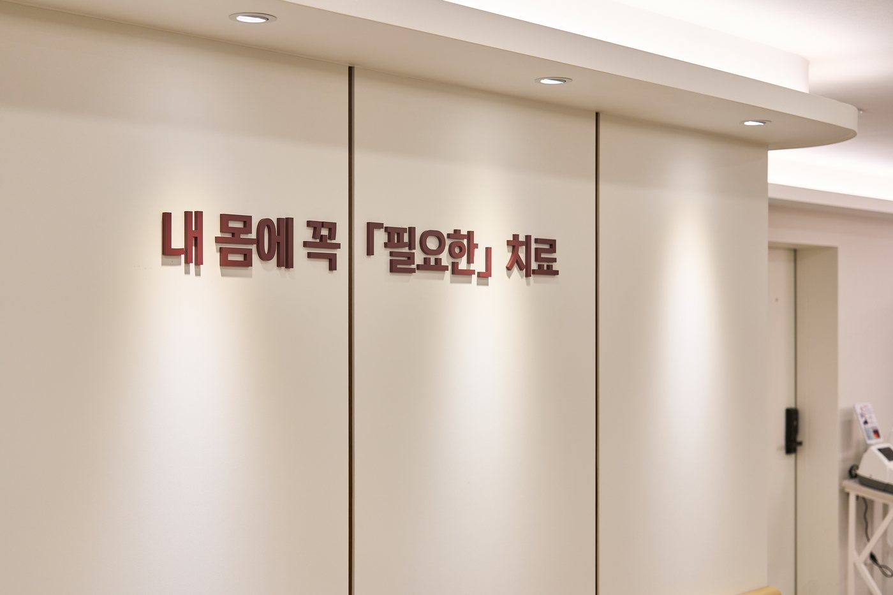
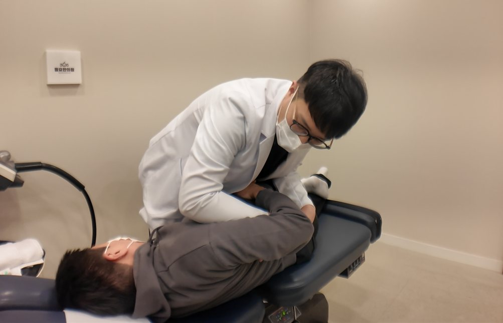
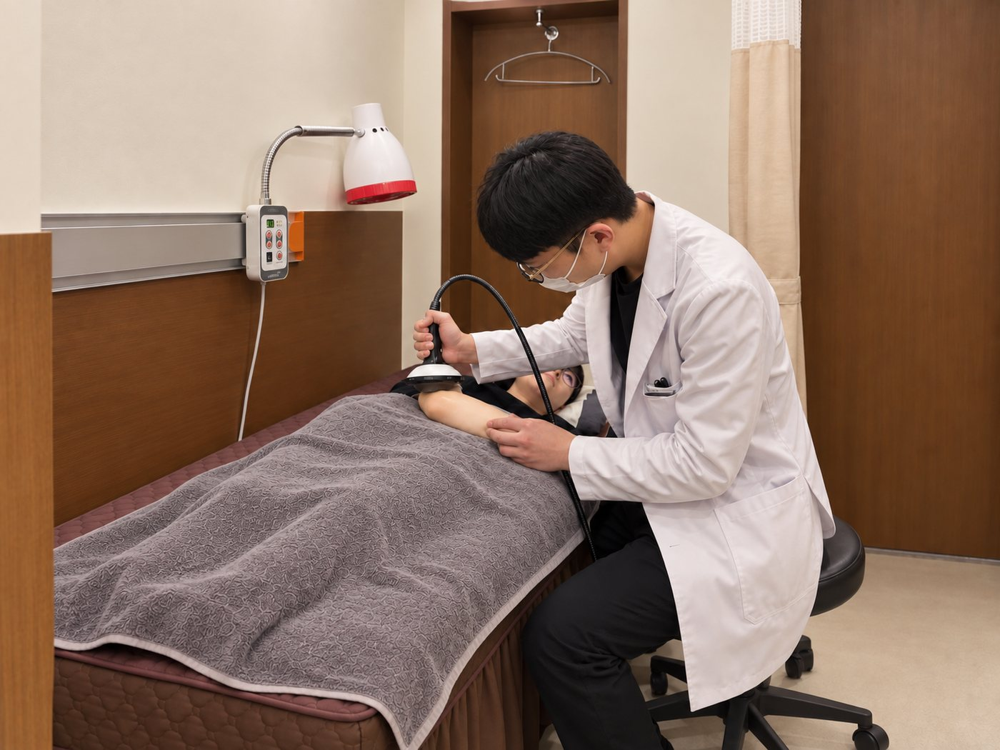
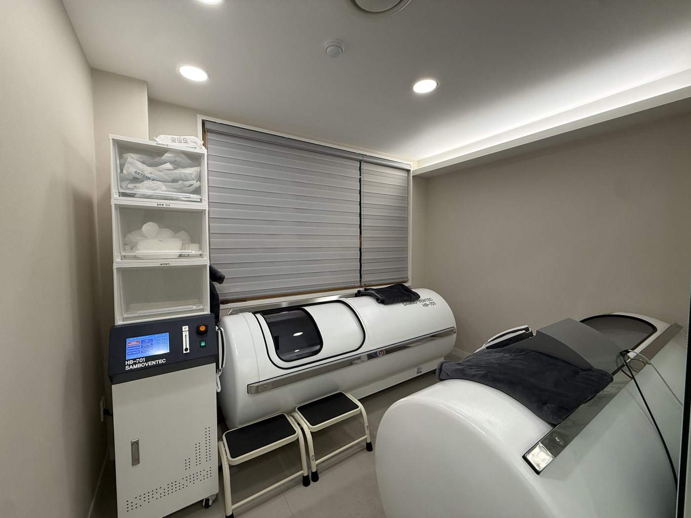
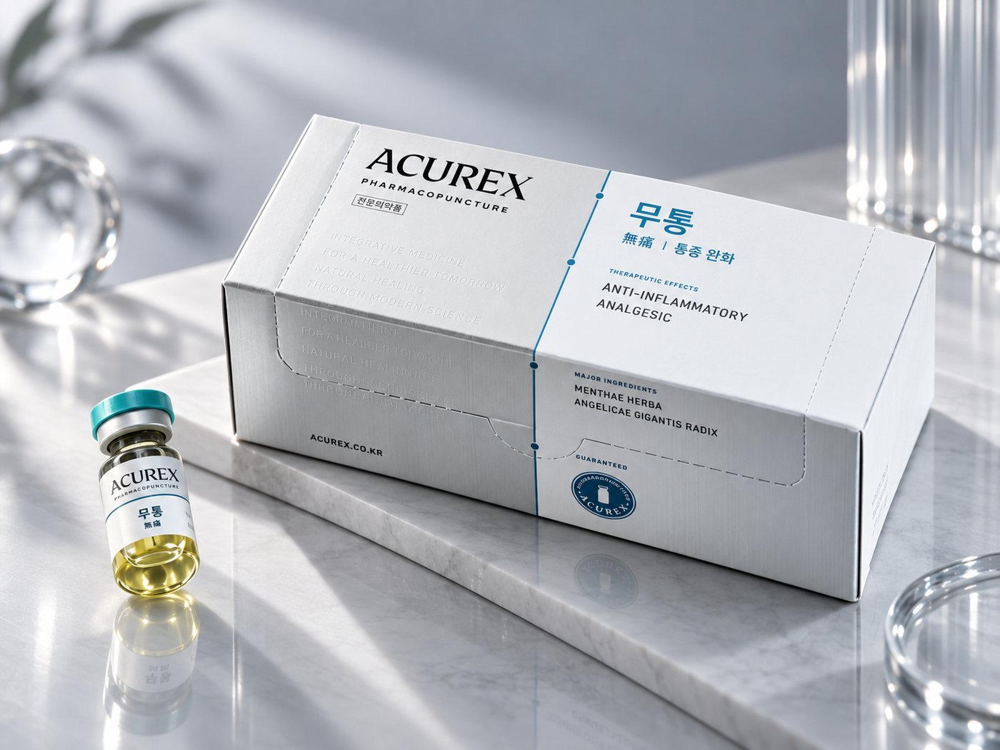
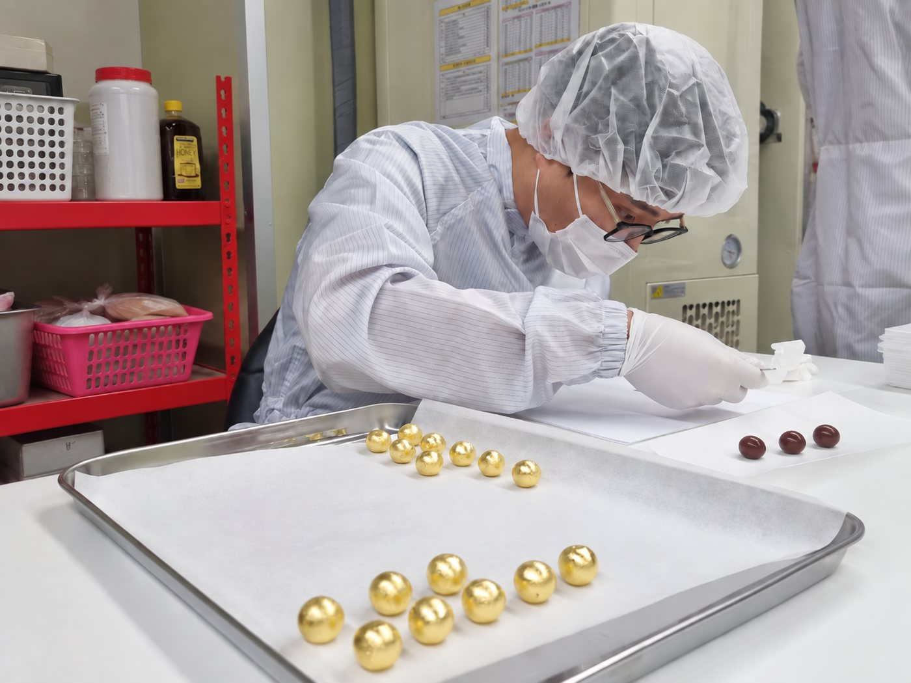

365일 진료
한의사 3인이
함께 진료합니다
추나·약침·다이어트·고압산소까지, 지금 내 몸에 필요한 치료를 한곳에서 받으실 수 있습니다.
진료시간 안내
- 평일
- 09:00 – 21:00
- 토·일·공휴일
- 09:00 – 15:00
- 점심시간
- 13:00 – 14:00
진료 안내
지금 내 몸에는
어떤 진료가 필요할까요?
관심 있는 진료의 과정과 안내사항을 확인해보세요.
-

교통사고진료 사고 뒤의 불편함, 필요한 절차까지 듣고 함께 살핍니다. -

체형교정추나 자세와 움직임을 살피고, 내 몸에 필요한 교정을 합니다. -

체외충격파치료 최신 장비로 원장이 직접 필요한 부위에 시행합니다. -

고압산소치료 대학병원급 고압산소챔버를 이제 집앞에서 만나보세요. -

통증클리닉 어디가, 언제, 어떤 동작에서 아픈지부터 듣습니다. - 필요한 다이어트 굶지 않고, 필요한 만큼만. 건강한 다이어트를 지향합니다.
-

필요한 맞춤한약 필요한 사람에게, 필요한 만큼만 처방합니다. - 여성 클리닉 생리통·갱년기·산전산후, 시기마다 필요한 관리를 합니다.
365필요한의원의 진료원칙
지금 환자에게 가장
필요한 것을 찾습니다.
- 같은 부위가 불편해도 원인과 계기는 사람마다 다릅니다
- 언제, 어떤 동작에서 불편한지 확인하고 환자의 불편을 줄입니다
- 몸의 현재 상태를 정확히 파악한 뒤 진료 계획을 설명합니다
- 필요한 치료만 시행하고, 필요하지 않으면 권하지 않습니다
'필요한'이라는 이름은 과하지 않게 진료하겠다는 약속입니다.
환자들의 이야기를 잘 듣습니다.
무미건조한 진료는 절대 하지 않습니다. 환자의 말을 세세히 듣습니다.
듣고 함께 살핍니다.
몸의 상태와 움직임을 확인하고 진료 계획을 설명합니다.
필요한 치료를 합니다.
진단과 치료 과정, 비용을 설명하고 필요하지 않은 치료는 권하지 않습니다.
진료시간
- 평일
- 09:00 – 21:00
- 토·일요일
- 09:00 – 15:00
- 공휴일
- 09:00 – 15:00
- 점심시간
- 13:00 – 14:00
- 접수 마감
- 진료 종료 20분 전 접수 마감
휴진·임시 진료시간 변경은 네이버 예약 페이지와 공지로 먼저 안내합니다.
자주 묻는 질문
방문 전에 궁금한 점
진료별 질문은 각 진료 안내 페이지에서 확인하실 수 있습니다.
예약 없이 방문할 수 있나요?
예약 없이도 진료받으실 수 있습니다. 다만 예약하시면 대기 시간을 줄일 수 있습니다.
한의원 치료도 실비보험 적용이 되나요?
대부분의 환자분들이 실비보험 적용을 받고 계십니다. 내 보험이 적용되는지 모르는 경우, 저희가 직접 확인해드립니다.
치료 시간은 얼마나 걸리나요?
치료의 종류에 따라 다르지만, 보통 약 40분~1시간 정도가 소요됩니다. 빠른 진료를 원하실 경우 데스크에 말씀해주세요.
주차는 어디에 하면 되나요?
이디야 커피 뒤편 주차장 이용 · 무료